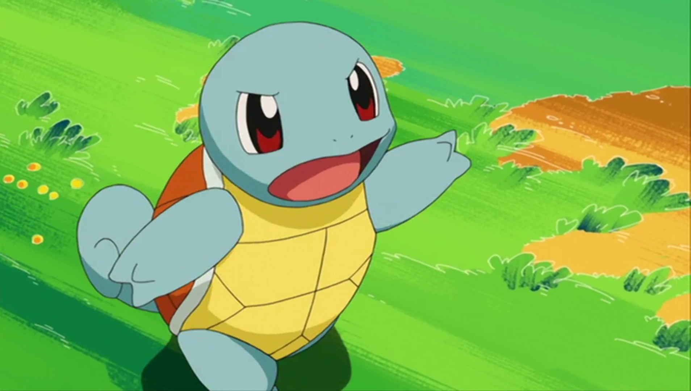

The Tiny Turtle Pokemon
Squirtle was designed as one of the starter Pokémon of Pocket Monsters Red and Green by Atsuko Nishida.
Squirtle is the water-type starter for the first generation games. It is typically seen walking on two legs but it also runs on four legs. It appears as a playable character in Smash Bros. Series. It's turtle like appearance is maintained throughout its evolution.
Charmander has a more childish appearance which slowly transforms into a more draconic look as it evolves.
| Generation I | Generation II | Generation III |
|---|---|---|
|
Pokemon Red and Blue
After birth, its back swells and hardens into a shell. Powerfully sprays foam from its mouth. Pokemon YellowShoots water at prey while in the water. Withdraws into its shell when in danger. Pokemon StadiumIt takes time for the shell to form and harden after hatching. It sprays foam powerfully from its mouth. |
Pokemon Gold
The shell is soft when it is born. It soon becomes so resilient, prodding fingers will bounce off it. Pokemon SilverThe shell, which hardens soon after it is born, is resilient. If you poke it, it will bounce back out. Pokemon CrystalWhen it feels threatened, it draws its legs inside its shell and sprays water from its mouth. Pokemon Stadium 2The shell is soft when it is born. It soon becomes so resilient, prodding fingers will bounce off it. |
Pokemon Ruby and Sapphire
Squirtle's shell is not merely used for protection. The shell's rounded shape and the grooves on its surface help minimize resistance in water, enabling this Pokémon to swim at high speeds. Pokemon EmeraldIts shell is not just for protection. Its rounded shape and the grooves on its surface minimize resistance in water, enabling Squirtle to swim at high speeds. Pokemon FireRedWhen it retracts its long neck into its shell, it squirts out water with vigorous force. Pokemon LeafGreenAfter birth, its back swells and hardens into a shell. Powerfully sprays foam from its mouth. |
| Generation IV | Generation V | Generation VI |
|
Pokemon Diamond, Pearl and Platinum
It shelters itself in its shell, then strikes back with spouts of water at every opportunity. Pokemon HeartGoldThe shell is soft when it is born. It soon becomes so resilient, prodding fingers will bounce off it. Pokemon SoulSilverThe flame on its tail indicates Charmander's life force. If it is healthy, the flame burns brightly. |
Pokemon Black and White
It shelters itself in its shell, then strikes back with spouts of water at every opportunity. Pokemon Black 2 and White 2It shelters itself in its shell, then strikes back with spouts of water at every opportunity. |
Pokemon X
It shelters itself in its shell, then strikes back with spouts of water at every opportunity. Pokemon YShoots water at prey while in the water. Withdraws into its shell when in danger. Pokemon Omega Ruby and Alpha SapphireSquirtle's shell is not merely used for protection. The shell's rounded shape and the grooves on its surface help minimize resistance in water, enabling this Pokémon to swim at high speeds. |
| Generation VII | Generation VII | Generation IX |
|
Let's Go Eevee and Let's Go Pikachu
Shoots water at prey while in the water. Withdraws into its shell when in danger. |
Pokemon Sword
When it retracts its long neck into its shell, it squirts out water with vigorous force. Pokemon ShieldWhen it feels threatened, it draws its limbs inside its shell and sprays water from its mouth. Pokemon Brilliant Diamond and Shining PearlIt hides in its shell to protect itself, then strikes back with spouts of water at every opportunity. |
Pokemon Scarlet
After birth, its back swells and hardens into a shell. It sprays a potent foam from its mouth. Pokemon VioletIts shell is soft immediately after it is born. In no time at all, the shell becomes so resilient that a prodding finger will bounce right off it. |